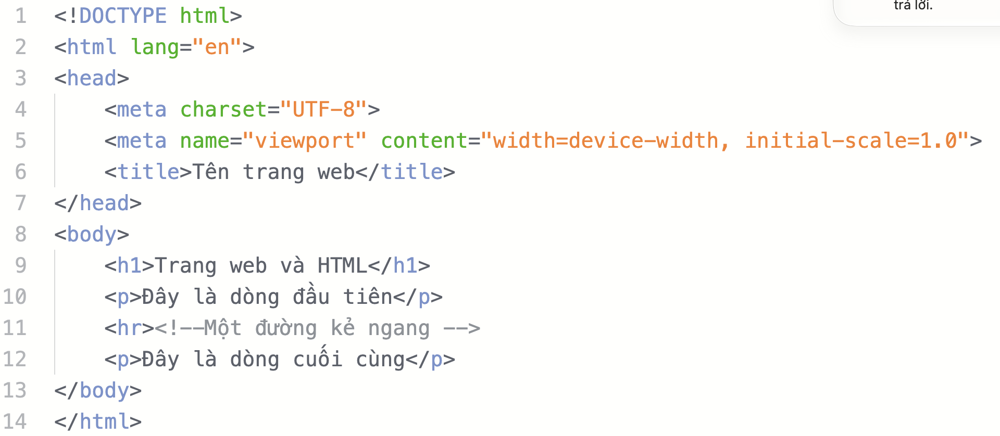
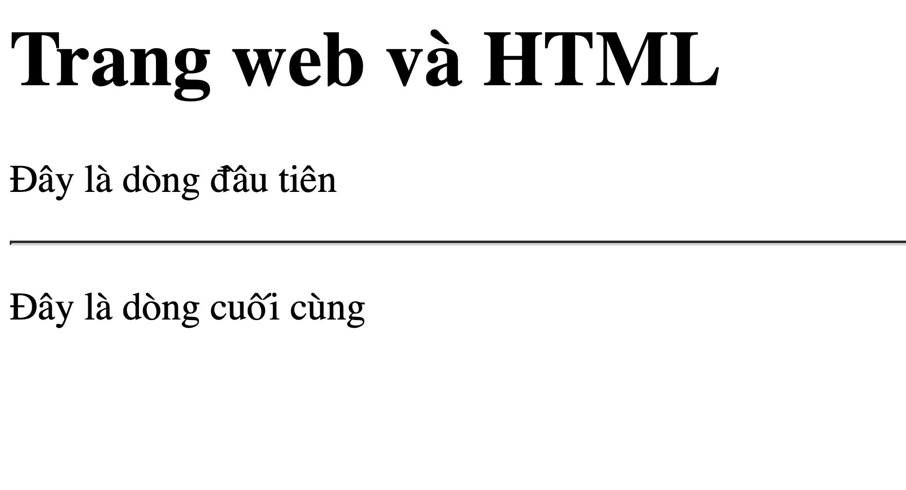

1 Câu hỏi gợi mở – Đặt vấn đề vào bài
"Có bao giờ cả lớp thắc mắc: Làm thế nào để tạo ra được một trang web mà mình thường xuyên truy cập hằng ngày hay không?"
Hằng ngày chúng ta mở điện thoại hoặc máy tính lên đọc báo (VnExpress, Dân Trí), tra cứu Google, xem YouTube hay lướt mạng xã hội... Theo em, người ta dùng cách gì để xây dựng nên những trang web ấy?
Bấm để xem phân tích và chốt vấn đề của Giáo viên
• Rất nhiều bạn nghĩ rằng trang web cần những phần mềm đồ họa cao siêu hoặc các dòng code bí ẩn khó hiểu.
• Thực chất, tất cả các trang web mà em xem được hiển thị bởi các trình duyệt web (Google Chrome, Cốc Cốc, Safari, Edge, Firefox...) đều bắt nguồn từ các tệp văn bản thuần túy!
• Các tệp văn bản này được gọi là trang nguồn (source code). Và công cụ, ngôn ngữ phổ biến nhất toàn cầu để xây dựng nên cấu trúc của trang web chính là HTML.
2 Quan sát trực quan: Mã nguồn (Source Code) vs Kết quả trên Trình duyệt
(Tài liệu minh họa từ KHBD - Nhấp vào ảnh để phóng to)1. Tệp Mã nguồn (HTML Source Code)
Soạn thảo trên máyMã nguồn được lập trình viên viết bằng các ký tự và cặp thẻ HTML trong trình soạn thảo:

<!DOCTYPE html>
<html lang="vi">
<head>
<meta charset="UTF-8">
<title>Tên trang web</title>
</head>
<body>
<h1>Trang web và HTML</h1>
<p>Đây là dòng đầu tiên</p>
<hr><!-- Một đường kẻ ngang -->
<p>Đây là dòng cuối cùng</p>
</body>
</html>2. Kết quả Hiển thị trên Trình duyệt
Trình duyệt biên dịchTrình duyệt đọc hiểu các thẻ HTML và vẽ nên giao diện trực quan cho người dùng xem:

- Người dùng chỉ nhìn thấy nội dung văn bản, không hề thấy các cặp thẻ
<h1>hay<p>! - Thẻ
<h1>làm chữ to và đậm (tiêu đề). - Thẻ
<hr>tạo ra một đường kẻ phân cách ngang. - Thẻ
<title>hiển thị tên trên tab trình duyệt chứ không nằm trong trang trắng.
3 Khái niệm & Định nghĩa Cốt lõi về HTML
HTML là gì?
HTML là viết tắt của cụm từ HyperText Markup Language (Ngôn ngữ đánh dấu siêu văn bản). Đây là một bộ quy tắc dùng để thiết lập cấu trúc và xác định cách trình bày nội dung trên trang web.
Tệp Trang Web
Các trang web thường được lưu trữ dưới dạng tệp văn bản có phần mở rộng (đuôi tệp) là .html hoặc .htm, được gọi chung là trang HTML.
Thẻ đánh dấu (Tag)
Trên trang HTML, nội dung được bao bọc bởi các ký hiệu đặc biệt gọi là thẻ đánh dấu HTML (HTML tags), ví dụ: <head>, <title>, <body>, <h1>, <p>...